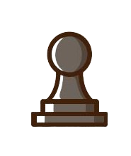
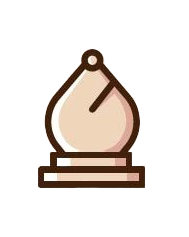
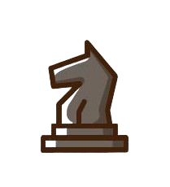
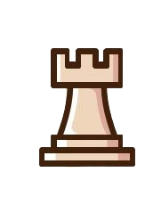
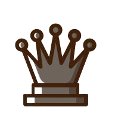
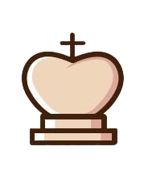

Generally the pawn moves forward only, one square at a time. An exception is the first time a pawn is moved, it may move forward two squares. The pawn cannot jump over other pieces; any piece directly in front of a pawn blocks its advance to that square. The pawn is the only piece that cannot move backward.

The bishop chess piece moves in any direction diagonally. Chess rules state that there is no limit to the number of squares a bishop can travel on the chessboard, as long as there is not another piece obstructing its path. Bishops capture opposing pieces by landing on the square occupied by an enemy piece.

The knight is the only piece on the board that may jump over other pieces. The knight moves two squares horizontally or vertically and then one more square at a right-angle. The knight's move is shaped as an “L”. The knight always lands on a square opposite in color from its initial square.

The rook moves horizontally or vertically, through any number of unoccupied squares. As with captures by other pieces, the rook captures by occupying the square on which the enemy piece sits. The rook also participates, with the king, in a special move called castling.

The queen can be moved any number of unoccupied squares in a straight line vertically, horizontally, or diagonally, thus combining the moves of the rook and bishop. The queen captures by occupying the square on which an enemy piece sits.

TThe King can move one space in any direction (see the diagram). He can never move in to "check" (where he is threatened by another piece). This means the king can never be in the space adjacent to the opposing King. The king can also castle.
